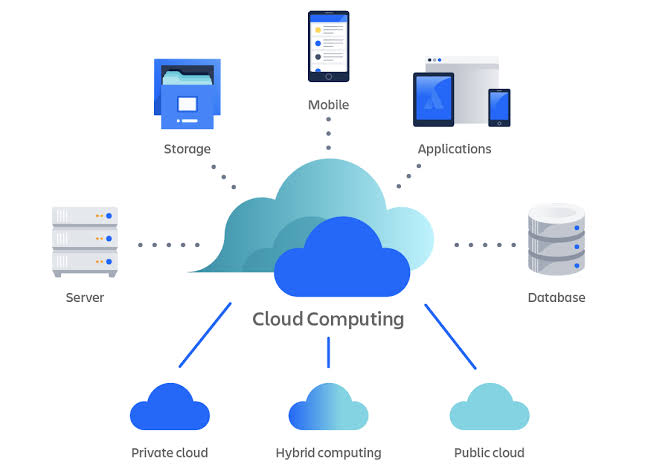

KHÁI NIỆM
Tài nguyên công nghệ, sẵn sàng qua Internet

Điện toán đám mây là mô hình cung cấp tài nguyên công nghệ thông tin qua Internet theo nhu cầu. Thay vì phải tự mua, lắp đặt và bảo trì máy chủ tại chỗ, cá nhân hoặc doanh nghiệp có thể sử dụng năng lực tính toán, lưu trữ, cơ sở dữ liệu và phần mềm từ nhà cung cấp dịch vụ. Người dùng thường truy cập các tài nguyên này bằng trình duyệt hoặc giao diện lập trình, đồng thời chỉ cần cấu hình và thanh toán theo mức sử dụng.
Một ưu điểm quan trọng của cloud là khả năng mở rộng linh hoạt: tài nguyên có thể tăng khi nhu cầu cao và giảm khi không còn cần thiết. Dịch vụ được cung cấp qua mạng giúp người dùng làm việc ở nhiều địa điểm, chia sẻ dữ liệu và triển khai ứng dụng nhanh hơn. Nhà cung cấp thường quản lý phần lớn hạ tầng vật lý, cập nhật hệ thống và hỗ trợ tính sẵn sàng; tuy nhiên, khách hàng vẫn cần quan tâm đến bảo mật, quyền truy cập, sao lưu và chi phí.
Điện toán đám mây hiện diện trong nhiều hoạt động hằng ngày, từ lưu ảnh trực tuyến, dùng email, xem video đến vận hành website và ứng dụng doanh nghiệp. Tùy theo nhu cầu kiểm soát và mức độ quản lý mong muốn, người dùng có thể chọn các mô hình như IaaS, PaaS hoặc SaaS. Việc lựa chọn đúng mô hình giúp cân bằng giữa tính linh hoạt, công sức vận hành và ngân sách.